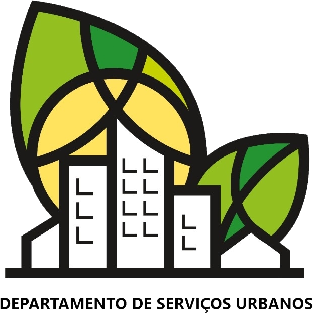
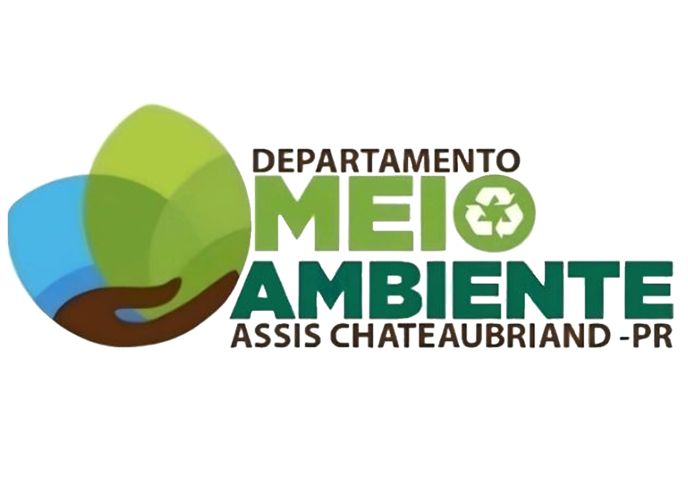
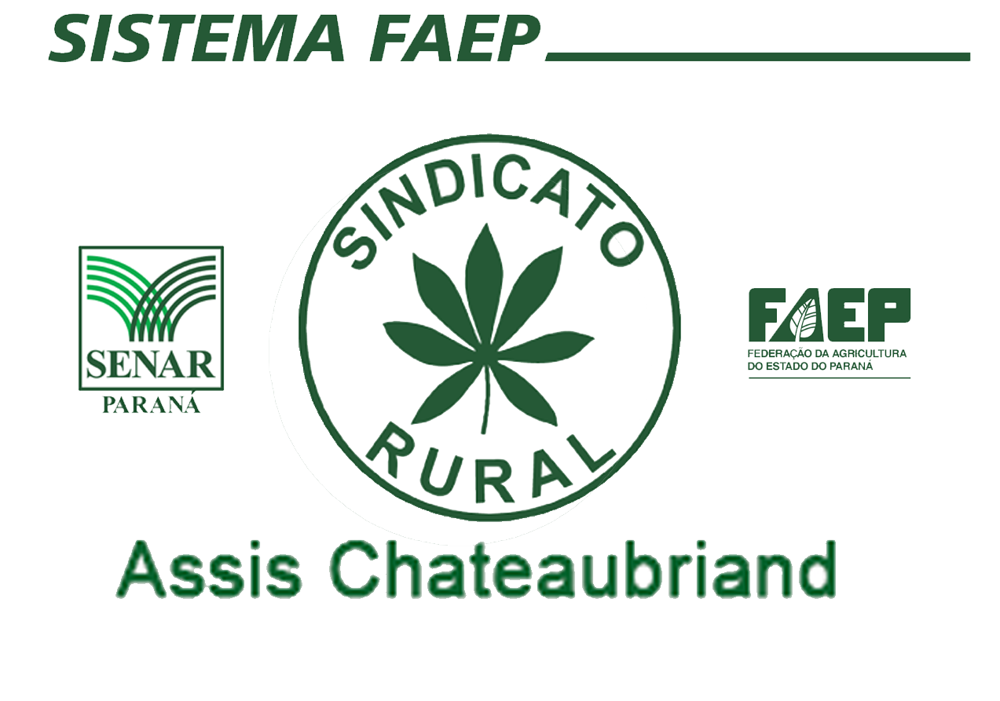
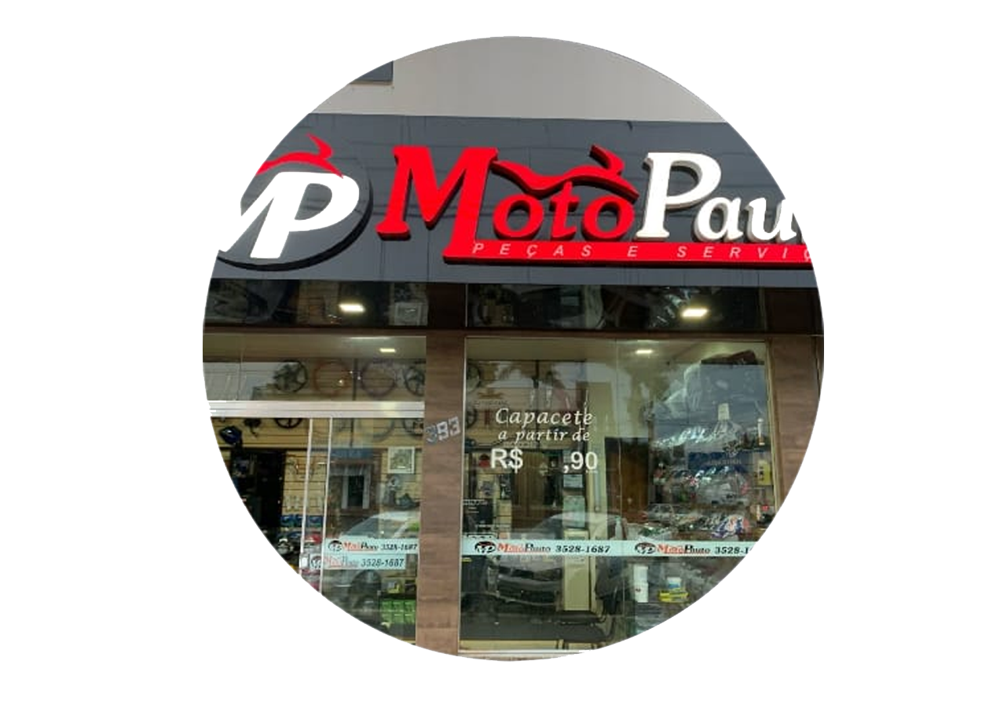
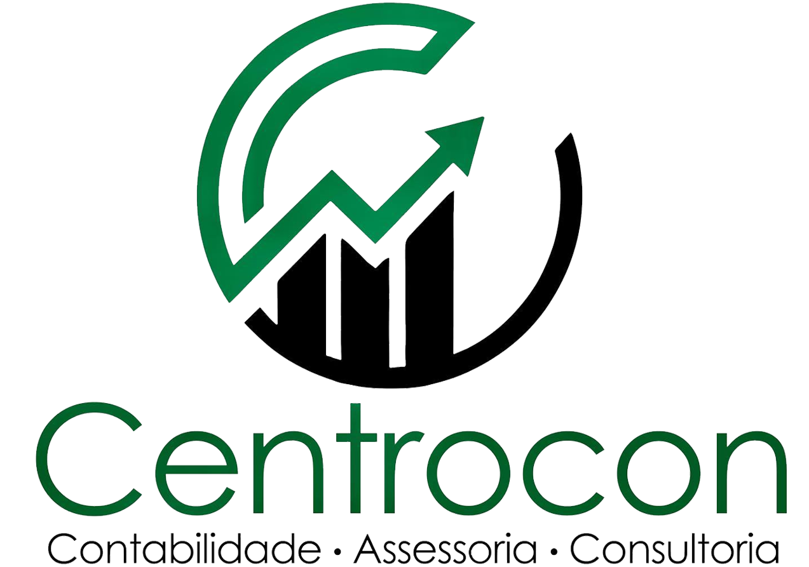
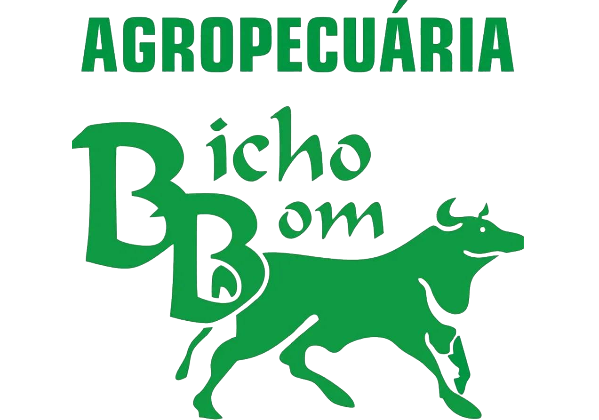

Apoiadores






Fase 1 ( PROGRAMAÇÃO )
Fase 2 ( TESTES )
Fase 3 ( EXECUÇÃO)
Projeto Agro Detector
Coleta e Mapeamento de Resíduos Tóxicos e Microplásticos
Projeto
Noticias
Componentes
Ideia
Materiais
Experiência
Agradecimentos
Fotos
Professor
Alunos
0
Frascos
tóxicos coletados
0
Ponto doméstico
a ser coletado
Baixar Relatório PDF